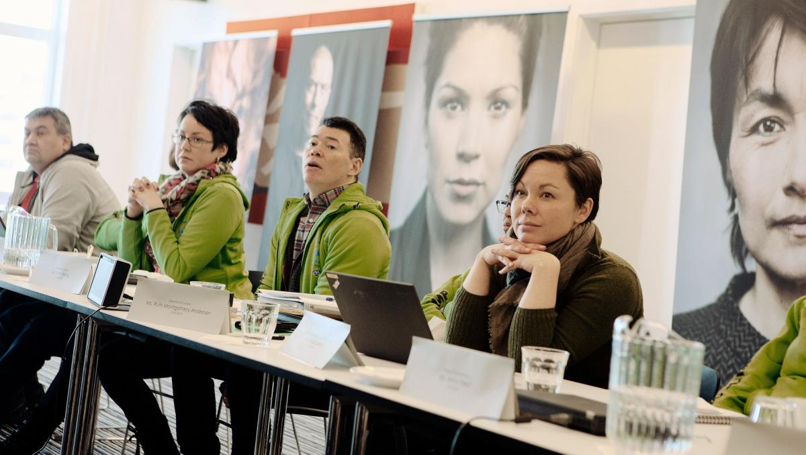

Press
Welcome to the media center of AWG2016! We invite you to join us for the biggest event in Greenland’s history
AWG2016 and Visit Greenland are excited and proud to welcome you to Nuuk, Greenland for Arctic Winter Games 2016. Please find some relevant information below:
- Media registration
- Media Contact and Services during the Games
- Transportation during the Games
- Media Events during the Games
- IMPORTANT: Ticketed events policy for Opening Ceremony, Gala Shows and Closing Ceremony
- KNR broadcasting
- Social media hashtags
- Media liasons
You should have already registered online through the GEMS system. From Saturday 5th March, you can pick up your accreditation badge and Media Kit at the Media Center in Hotel Hans Egede, Room 22. As a general rule, you should wear your accreditation badge at all times. Staff will also be available to answer any questions you may have about getting around town or the next big story.
AWG2016 Media Center
Open Daily from 5th - 12th March
Address: Aqqusinersuaq 2
Hotel Hans Egede, Room 22
Phone number: (+299) 52 32 81 - open during Media Center Opening Hours
Email: media@awg2016.gl
The Media Center is your hub during AWG2016, and it is the center for all things related to press, social, online and media. We hope that you can use the facilities as a place for networking, sourcing information and gaining contacts.
| Date | Opening Hours |
| Saturday 5th March | 10am - 7pm |
| Sunday 6th March | 9am - 8pm |
| Monday 7th March | 7am - 9pm |
| Tuesday 8th March | 7am - 9pm |
| Wednesday 9th March | 7am - 9pm |
| Thursday 10th March | 7am - 9pm |
| Friday 11th March | 7am - 9pm |
| Saturday 12th March | 8am - 12pm |
Facilities in the Media Center
There will be wifi, one communal computer, working areas, and light refreshments available in the Media Center during opening hours. The hotel has a 100mB connection to the Internet but please note that this capacity is shared with all hotel guests. Within the Media Center, there are two outlets connecting to cable Internet, but this will be prioritized for broadcasting purposes. If you require use of these outlets and have multiple equipment we recommend that you bring your own switch.
Printing is available at the hotel from 7am to 4pm on the 1st and 5th floor. Please ask hotel reception staff. A standard A4 black/white print will cost 2 DKK and a colour print will cost 3 DKK.
Portable Chargers
There will be portable chargers available for your free usage around town each day. They can be picked up in the Media Center and should be returned at the end of the day so that they can be charged overnight for the following day’s usage.
Public Photo Galleries
SmugMug
All photos taken by the Photo Committee before and during the Games will be posted as soon as possible to the AWG2016 Smug Mug photo gallery found at: https://awg.smugmug.com/browse. The photos are free for you to use with crediting as below. The photographer’s name and other details can be by clicking the Info icon beneath each photo, in the EXIF data.
AWG2016 / [Photographer’s Name]
Prior to the Games, all available content can be found in the album called “The Road to AWG Nuuk 2016”.
Once the Games begin, photos will be posted into different albums according to discipline, with a gallery for each day.
Visit Greenland Photo Database
Visit Greenland has a gallery of photos about Arctic Winter Games, all the towns and settlements in Greenland, and all the tourism activities. This is a much broader photo gallery than the Smug Mug gallery.
Please follow this introductory guide to get full access to the database:
http://corporate.greenland.com/en/newsletter-archive/libris-new-visit-greenland-photodatabase/.
The Visit Greenland photo gallery can be found at: www.photos.greenland.com, and you should follow the guide in the link above to create a free account in order to have full search and download access.
The photos are free for you to use with proper crediting to Visit Greenland and the photographer. Please note that only photos with a Limited Commercial License are available for you to use.
Interpreter Services
AWG2016 provides a volunteer interpreter service through the Language Committee for interviews. For planning purposes it is preferred that you contact a Press Officer at the Media Center at least one day prior, who will then investigate if an interpreter is available for you.
TRANSPORTATION
Nuuk is a city with a walkable center. You should be able to get by on foot to many of the venues, but there will also be AWG shuttle buses to reach venues located outside Nuuk’s city center.
Private Media Carpool
Open Daily from 6th - 11th March
Address: Aqqusinersuaq 2
Hotel Hans Egede
This service will be available for international media needing transportation to get to and from popular venues outside of the city center, for example the biathlon track in Qinngorput. There will also be some set pick up and drop off options for organized events like the Opening and Closing Ceremonies.
For planning purposes, all international media are encouraged to book their wishes at least one day ahead at the Media Center. You may also call the Media Center during Media Center Opening Hours to see if there is space: (+299) 52 32 81.
Please note that there are 60 international journalists eligible for this service, so we will try to be as helpful as possible but may not be able to accommodate all of your wishes. In this case, taxis are available for hire.
| Date | Carpool Hours |
| Sunday 6th March | Opening Ceremony shuttle (11am - 3pm) |
| Monday 7th March | 7am - 9pm |
| Tuesday 8th March | 7am - 9pm |
| Wednesday 9th March | 7am - 9pm |
| Thursday 10th March | 7am - 9pm |
| Friday 11th March | 7am - 9pm |
Buses
Media will have access to the AWG2016 bus system during the Arctic Winter Games by showing their badge when boarding the bus. Please note that where there is a question of capacity athletes, officials and volunteers will have priority to board the buses.
The bus plan can be found on the AWG2016 website at http://awg2016.gl/en/busschedule. During the Games, the regular bus timetables will also run, and they can be found here on Nuup Bussii’s website: http://www.bus.gl/fileadmin/user_upload/koereplaner/Ruterne_som_enkeltsider_i_samlet_fil_29042015.pdf.
A bus card costs 120 DKK for 11 rides, and each ride is valid for 1.5 hours.
Taxi
There are two taxi companies which can be contacted by telephone:
Nuuk Taxi: (+299) 36 36 36
TAXAGUT: (+299) 32 13 21. Taxagut also has an app which is worth downloading for ordering cabs.
Daily Press Conferences from 7th - 11th March, 8am - 9am
Media Center
Hotel Hans Egede, Room 22
All media are encouraged to attend the daily press conferences. Latest updates and relevant information will be covered, including which sports could be interesting for press to see that day.
Furthermore, a non-AWG2016 theme pertinent to Greenland will be highlighted each morning in ‘A topic in ten minutes’. We have hand-picked individuals from all walks of life in Greenland to speak about a topic pertinent to them and of interest to the outside world. They have ten minutes to present, and there will be opportunity for questions after.
‘A topic in 10 minutes’: Perspectives from the Inside
Monday 7th March: Culture and Identity in Greenland
With her red hair, fair skin and freckles – and being Greenlandic - Mia Chemnitz has faced most stereotypes of what a Greenlander is supposed to look like. To break down some of these stereotypes and give you a more rounded idea of what Greenlanders are now, Chemnitz will tell her own story based on the native culture and history of the country.
Tuesday 8th March: Fisheries and Seafood
Fishing is Greenland’s dominant industry. As chairman of the Greenland Business Association and of Greenland’s largest privately-owned fishing group, Henrik Leth will draw parallels between the development of an international commercial group and the Arctic ”Olympiad” (AWG2016) – including the commitment it demands to build up a complex organisation that spans cultures and borders.
Wednesday 9th March: Climate Change and Human Perspectives
Thomas Juul-Pedersen is a marine biologist at the Greenland’s Institute of Natural Resources. He will tackle these three hot questions often asked about climate change in Greenland. Do you experience changes caused by shifts in climate? How will changes in climate affect Greenland society? How will the natural resources in Greenland be affected by climate change?
Thursday 10th March: Introducing the Next Host Society
Representatives from the city of South Slave in North West Territories will introduce their city as the Next Host Society. Here’s to AWG2018!
Friday 11th March: Challenges and Opportunities of Education in Greenland
Tukumminnguaq Olsen from Qaanaaq (Thule) in North Greenland moved 1204 km away from her family to go to middle school in Aasiaat when she was just 15 years old. She is the only student from her class who has pursued a higher education. She is currently in her final year of a BA in Social Sciences and will reflect upon her personal experiences of education in Greenland.
Press Breakout Sessions
Wednesday 9th March, 9:30am - 10:30am
& Friday 11th March, 9:30am - 10:30am
Address: various locations
Meet in Media Center Meeting Point at Hotel Hans Egede Room 22 at 9:15am. Transportation provided.
On certain days following the press conference, all media are invited to a special arrangement that develops the ‘A Topic in 10 Minutes’ from the day’s press conference.
RSVP are required for these events as there are limited places. Please RSVP to: media@awg2016.gl or talk to a Press Officer at the Media Center to secure your place.
The breakout sessions are:
Tuesday 8th March: Seafood Gastronomy
Cooking demonstration and tasting at the private home of Anne Nivíka Grødem, an entrepreneur that goes by The Greenlandic Food Lover. Anne Nivika focuses on the love of good food and recipes using items available in Greenland.
Wednesday 9th March: The Human Side of Climate Change
Tour and talk at Pinngortitaleriffik, the Greenland Institute of Natural Resources, with Thomas Juul-Pedersen
Friday 11th March: Education
Panel discussion on education at Conference Room T1 in Katuaq with a politician, a parent and a not-for-profit social worker about the impact and implications of living in and pursuing an education in Greenland.
TICKETED EVENTS POLICY
For ticketed events such as the Opening Ceremony, Gala Shows and Closing Ceremony, there will be a limited number of free seats reserved for media due to the size of the venues. Where possible, media will be allocated seated tickets for any events you wish to cover.
All requested tickets have now been allocated, but there are still a few show tickets available.
Gala Shows
For Gala Shows on Wednesday 9th March and Thursday 10th March, there were 40 seats and 20 seats available, respectively. There are still a few media tickets available on 9th March. All media tickets on 10th March have been distributed. In the event you are not allocated a seated media ticket, it is currently possible to purchase a public ticket at www.katuaq.gl.
Closing Ceremony
For the Closing Ceremony, there will be 60 seats reserved for media. There will also be separate standing zones reserved for media photographers, videographers and TV crew. There is no need for a ticket in these standing zones.
The Closing Ceremony seated tickets will be allocated and announced by Tuesday 8th March at 8am via a posted list in the Media Center. In the event you are not allocated a seated media ticket and that you do not wish to stand in the reserved zone, it is currently possible to purchase a public ticket at www.katuaq.gl.
Ticket Request & Collection Procedure
Allocated and available tickets can be collected at the Media Center. You must show your media badge and event ticket to gain access to your seat.
KNR BROADCASTING INFORMATION
There have been many questions about KNR Broadcasting. You can find further information in here.
SOCIAL MEDIA HASHTAGS
Follow the coverage of Arctic Winter Games on the social media pages listed below, on this website and Greenlandic newspaper websites and news sources here: Link.
- Team Nunavut: Mariele Depeuter, 521430, MDepeuter@GOV.NU.CA
- Team Alaska: Kennis Brady, +1 (907) 351-2250, kennis.brady@gmail.com, media@teamalaska.org
- Team Nunavik – Québec: Brent Reaney, 867-446-3985, breaney@vergecomms.ca
- Team Yukon: Paolo Gallina, paolo@casagallina.com, 521410
- Team Alberta North: Cam Berwald, Cam.berwald@albertasport.ca, 780-422-7109
- Team Yamal: Jana Wrublewska, yana_v_25@mail.ru, 521583
- Team Sapmi: Aslak Paltto, paltto@hotmail.com, 521563
- Team Northwest Territories: Melanie Kornacki, mkornacki@sportnorth.com, 867-446-0000
- Team Greenland: Carsten Olsen, carsten@gif.gl, 542636
